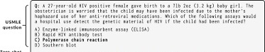

Create a polite response noHands-on sessions / Hands-on session 1 /
Basic tasks with text generation
Below are some tasks in which you can use general text generation capabiities of LLMs.
Answering emails: answer politely “no”
I hope this message finds you well. I am writing to you on behalf of Innovative Solutions International (ISI), an organization committed to fostering learning and growth across a wide range of disciplines. We are planning to host a workshop that caters to an audience with a broad background. Our attendees come from various fields, bringing a rich diversity of experiences, perspectives, and skills. We believe that this diversity is our strength, and we aim to create a learning environment that values and benefits from this breadth of knowledge. Given your expertise and experience, we would be honored if you could facilitate this workshop. Your ability to communicate complex ideas in an accessible and engaging manner makes you an ideal fit for our diverse audience. Thank you for considering our invitation. We look forward to your positive response.
Imagine you received the email above. In order to get help generating a text to decline it you can try the following prompts:
Say no and make sure they don’t ask you againSay no as a haikuAnswering emails: Rewrite the email you wrote yesterday before sending
I am writing to express my profound disappointment and anger regarding a matter of utmost importance. It has come to my attention that you have appropriated my research idea without my consent, presenting it as your own. This behavior is not only unethical but also a blatant violation of academic integrity.
I have worked tirelessly on developing this idea, investing significant time and effort into its conceptualization and preliminary research. To see my work misappropriated in such a manner is both infuriating and disheartening. Your actions have undermined the trust and collaborative spirit that are fundamental to our academic community.
I demand an immediate explanation for your actions and a formal acknowledgment of my contribution to the research. Furthermore, I expect you to take corrective measures to rectify this situation, including proper attribution of my work in any related publications or presentations.
This kind of conduct is unacceptable and will not be tolerated. I am prepared to escalate this matter to the appropriate academic and legal authorities if necessary.
I look forward to your prompt response and resolution of this issue.
You can use the following prompt to rewrite the email above:
Shorten and rewrite in a nicer toneCreating text from bullet points
A great way to create texts with LLMs is to provide bullet points as a starting point. Below is an example.
Write an abstract from these bullets:
1. Study Focus: Investigates cerebrospinal fluid (CSF) metabolites to predict progressive multiple sclerosis (PMS).
2. Biomarkers: Identifies 15 CSF metabolites differentiating relapsing-remitting MS (RRMS) from PMS.
3. Predictive Accuracy: Achieves high predictive accuracy (AUC = 0.93).
4. Clinical Application: Applied to PMS patients undergoing rituximab treatment, showing 68% had reduced similarity to PMS phenotype post-treatment.
5. Methodology: Uses conformal prediction to provide confident predictions and aid in early diagnosis and monitoring of PMS.write an introduction section for a manuscriptCompare with https://doi.org/10.1016/j.isci.2023.106906Chain-of-Thought
Here is another example of extracting information and then answering questions with chain of thought shown by the LLM. We will use an image and ask the LLM to extract the question from the image and then answer it. You can try to download the image below by clicking it. If that does not work, download the image using right click and then the option “Save Image As”.
{kind=link}
You can then upload this image to the LLM tool and try the following prompts.
Extract the text from the imageExecute the question in an LLMExecute the question with an added “think step by step”. Compare the answers.Role play
In these examples we show how you can ask the LLM to get into a specific mode.
Act as a legal counselor. Generate a brief non-disclosure agreement.Act as a HR Manager. Generate a travel policy for company X that is focuses on reducing carbon footprintAct as an interviewer for a job I'm applying for and ask me common interview questions.Act as a recruiter. Help me improve my CV.I want you to act as a life coach. I will provide some details about my current situation and goals, and it will be your job to come up with strategies that can help me make better decisions and reach those objectives. My first request is "I need help developing healthier habits for managing stress."Act as a password generator for individuals in need of a secure password. Generate 10 passwords in a table.